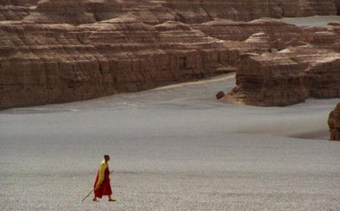

俗说：和尚不作怪，斋主不来拜，固然有少数这样装魔作怪的坏和尚，但是也有真正不少的很古怪的怪和尚，恐怕每一座名山上都有几个怪异的和尚，点缀点缀。没有烦恼显不出菩提，没有坏的那里有好的呢？
说起普陀山的怪人怪事也很多，这里只能略谈其一二：在笔者未去普陀以前，听人说有一个和尚叫小广东的（广东人）是一个怪人，有人说他是半仙，有人说他是罗汉，他很少与人说话，甚至三年说不到六句话，既不向人化缘，也看不见他吃饭；他不但不说话，连你想特意看他一面，都很难看见，他听见你叫他他就跑，甚至跑上山顶爬上树，都不给你会面，你送钱给他他不要，纵然接了去随时转送别人，再不然丢进香炉里去。据说他死的时候，是自己到山上寻了一些乱草枯柴，跑到沙滩上，放起一把火来，自己把自己火化了。
这里提起了普陀山怪人，就令人忘记不了的还有一个小罗汉，他本来的名字叫什么？大家都不知道。据说他过去是一个瘖哑的人，三年说不出一句话来，但他有一位哥哥，听说还是什么大寺里的方丈和尚，因此对他的半哑巴的弟弟特别关心，因为怜愍他的瘖哑之苦，就叫他在更深人静的时候，至诚垦切的礼拜大悲救苦观世音菩萨，菩萨定能有求必应，有感则通，使他哑病痊愈。小罗汉因此听了哥哥的吩咐，每天等到开过大禁，大众睡了觉以后，就开始礼拜救苦观世音，如是者不断的拜了几年，真是人有诚心，菩萨定能随愿感应，小罗汉真的会慢慢的讲起话来了。从此小罗汉不但不是哑巴，而且很有人缘，心胸旷达，少病少恼，大有唐朝奉化布袋和尚的风度，全山上下僧俗老幼，没有一个不认识小罗汉，同时也没有一个不喜欢小罗汉的，可是因为小罗汉疯疯傻傻，全山也就没有一个看见小罗汉不拿他开心取笑，但从来没看见小罗汉与人发过脾气、吵过嘴，他每天老是笑容可掬的对待一切人。
小罗汉最奇特的是有一个大肚皮，他的肚子可不能等闲视之，不但能忍受人所不能忍的侮辱，而且还能装得下人所不能吃的饭食，他和弥勒菩萨的大肚皮不相上下，你没有饭给他吃他也能够几天不吃；你若有饭，不论多少，要他吃下去，他也毫不推辞的全部受下，一粒米不留的装进他那肚皮袋子里去，同时，最怪的是不管你是什么臭不可闻的酸甜苦辣的馊饮食，他也是一扫而光的吃下去，决没有嫌丑爱好的现象。有的人有意和他开玩笑，看见小罗汉吃下去很多很多的剩饭残食以后，再提来一大铜茶壶开水，对小罗汉说：“小罗汉！这里有一茶壶开水，你能吃得了吗？”他笑笑说：“试试看！”他的嘴对着茶壶嘴，骨碌骨碌的不消一息功夫，已把一大壶水吃得滴水不留，伸一口气，笑笑说：“还有吗？”大家都惊奇得敬佩着，这位小罗汉有如此的大肚皮，因此他就名闻全山，无人不知了。
小罗汉，还有一个怪癖，他自从拜观世音菩萨得到感应，会开口讲话后，就没有生过病，每天冷的热的多的少的，酸的甜的，臭的剩的饭菜茶水吃下去，迎风仰卧，既没有打疟疾病，也不泻肚子，所以大家才称他是小罗汉，这实在是名符其实，一个应真的傻罗汉。最惹人发笑的是他怕人教他离开普陀山，你骂他、打他、侮辱他，他皆可以忍受，千万不能说迁他的单（开除他），你如果说：“大和尚（住持）要迁你的单！”他就要和你拼命，非把你拖到大和尚那里，要大和尚说：“没有此事，是他们和你开心的，我决不会迁你单的。”他才放下手来，顶礼大和尚而去。我想这位傻罗汉，不愿意离普陀的原因，是想暗中保卫名山，示现一个傻罗汉的样子罢了。
后寺有个挂单的老道士（因为普陀山道士道姑，喇嘛皆可以挂单的），这个老道士在后寺挂了二十几年单，跟随大家上殿过堂，他每天还念不少的佛经，普贤菩萨行愿品，他每天要念一遍，念得很熟，他化小缘的钱，或一月一次，或半月一次，全部送到库房供众，已经有七十多岁，看见我们很客气的合掌让路，笔者在山上很欢喜与这些人谈天，有人说这都是菩萨化现外道来供养佛法，观音菩萨三十二应，善财童子五十三参，内中有很多的菩萨是现外道相的。
除此笔者也亲眼看见几个老修行，有的不要钱，有的专要钱，不要钱的你送钱给他，他笑笑摇摇头，专要钱的跑得老远的向人要钱。佛顶山有一个老修行，他每天到外边化小缘，要来的钱都放进海青（大袍）袖子里去，一文也不肯用。一个袖子里重量约有十多斤，都是钞票，十年二十年前的钞票，都在他袖口里装着，大票子小票子，法币，储币，金圆券，银圆券，银元，角子一切皆有，真是集钞票之大成，假若你想动他一文，他就和你拼命。他白天化小缘，夜里拜大方广佛华严经，两脚站的脚印，印得很深，日夜都看不见他睡什么觉，几十年也没有洗过一次澡，可是他身上也不臭，也没有虱子，这也可算得上是一个怪人怪事。
是在三十七年吧？前寺有一个蒙古喇嘛，在山上挂单几年，因为北方不平静，不能回去蒙古，那个喇嘛很好，笔者在前寺任知客时，就在那里随众上殿过堂，后来客堂成就他，有一间小房子给他住在里边，自己可以自由用功，他白天也是化小缘，或者随众出坡（做事），夜里拜八十八佛，磕大头（密宗五体投地），持密咒，念佛。忽然有一天自己知道要往生西方，在未死以前两小时，还在街上化缘买蚕豆吃，回去即往前寺云水堂，与一些老同参告别要回去，他们以为他要回到蒙古家乡去，劝他不能回去，路上不好走，他说不是的，我要回到西方去；又到客堂向知客师告假，回去把香烛点起来拜了几拜，上床盘膝打坐被单往身上一裹，眼睛一闭，就往生西方去了。笔者曾亲自去看他死后的样子，坐在床上，如入禅定，一样的安然不动，他就这样子坐化了。像这些都可以说他有一点怪异。
我们要知道，一个菩萨道场，既然示现在人间，他就离开不了人间的社会相！无论是好是坏，是神是异，我们最好不必起分别心，凡夫的心境，终是不能测量菩萨境界的！看这些怪人怪事，以我们人世的一点小聪明，或小知见，岂可加以批评呢？